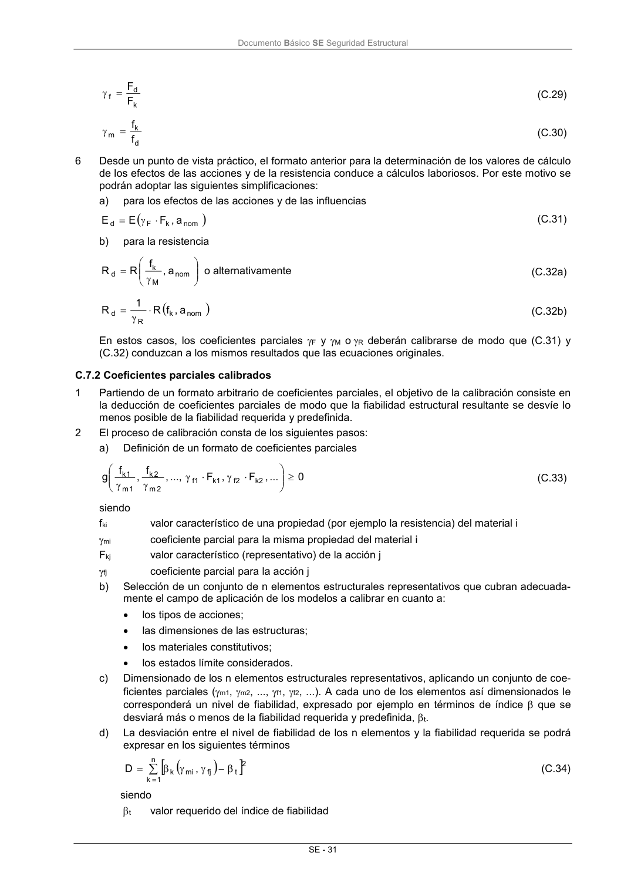

DB-SE Seguridad estructural · edición 2019-12-20 · capa oficial
Documento DB-SE-oficial · SHA-256 del PDF ec1fbfc51b28c4d62667aec480585b76fe31727ccf1615015a5d2d2677763f8f
Página física 37 de 45.
Copia fiel del PDF fuente · Fuente oficial
Ficha de la disposición en la fuente oficial
Formato: Texto de la página (Markdown)
Documento Básico SE Seguridad Estructural SE - 31 k d f F F (C.29) d k m f f (C.30) 6 Desde un punto de vista práctico, el formato anterior para la determinación de los valores de cálculo de los efectos de las acciones y de la resistencia conduce a cálculos laboriosos. Por este motivo se podrán adoptar las siguientes simplificaciones: a) para los efectos de las acciones y de las influencias nom k F d a , F E E (C.31) b) para la resistencia nom M k d a , f R R o alternativamente (C.32a) nom k R d a , f R 1 R (C.32b) En estos casos, los coeficientes parciales F y M oR deberán calibrarse de modo que (C.31) y (C.32) conduzcan a los mismos resultados que las ecuaciones originales. C.7.2 Coeficientes parciales calibrados 1 Partiendo de un formato arbitrario de coeficientes parciales, el objetivo de la calibración consiste en la deducción de coeficientes parciales de modo que la fiabilidad estructural resultante se desvíe lo menos posible de la fiabilidad requerida y predefinida. 2 El proceso de calibración consta de los siguientes pasos: a) Definición de un formato de coeficientes parciales 0 ... , F , F ..., , f , f g k2 f2 k1 f1 2 m 2 k 1 m 1 k (C.33) siendo fki valor característico de una propiedad (por ejemplo la resistencia) del material i mi coeficiente parcial para la misma propiedad del material i Fkj valor característico (representativo) de la acción j fj coeficiente parcial para la acción j b) Selección de un conjunto de n elementos estructurales representativos que cubran adecuada- mente el campo de aplicación de los modelos a calibrar en cuanto a: los tipos de acciones; las dimensiones de las estructuras; los materiales constitutivos; los estados límite considerados. c) Dimensionado de los n elementos estructurales representativos, aplicando un conjunto de coe- ficientes parciales (m1, m2, ..., f1, f2, ...). A cada uno de los elementos así dimensionados le corresponderá un nivel de fiabilidad, expresado por ejemplo en términos de índice que se desviará más o menos de la fiabilidad requerida y predefinida, t. d) La desviación entre el nivel de fiabilidad de los n elementos y la fiabilidad requerida se podrá expresar en los siguientes términos n 1 k 2 t fj mi k , D (C.34) siendo t valor requerido del índice de fiabilidad
